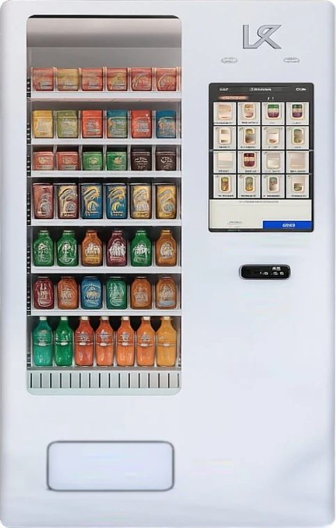
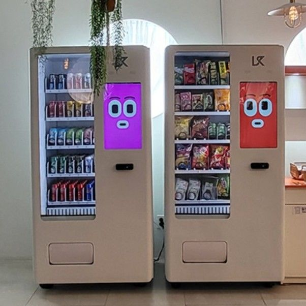
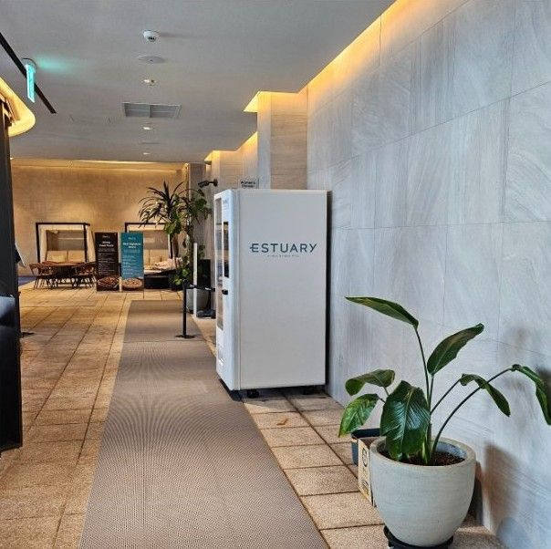
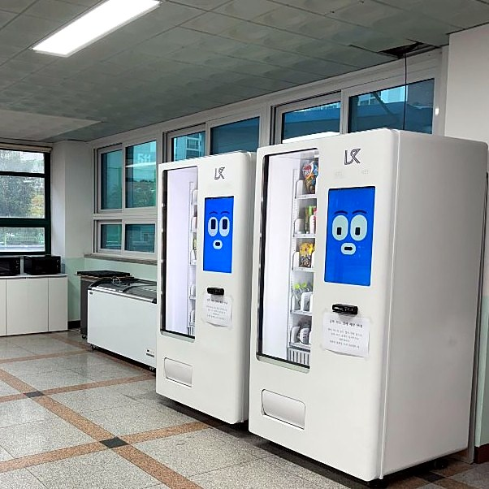
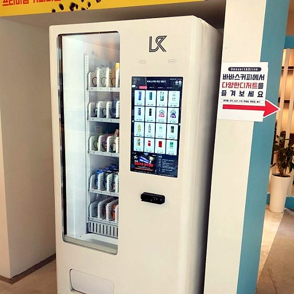

남는 자리 한 칸이,
24시간 매장이 됩니다.
음료·커피, 스낵, 아이스크림·냉동, 생활용품, 복합 자판기부터 무인키오스크까지. 설치할 자리를 먼저 보고 잘 팔릴 기종과 품목을 골라 전국에 설치해 드립니다. 설치비는 무료이고, 일시불·할부·렌탈로 편하게 시작할 수 있어요.

직원 없이도 파는 가게가
하나 더 생깁니다
자판기가 하는 일은 단순해요. 문 닫은 시간에도 팔고, 사람 손을 덜 쓰고, 매출은 휴대폰으로 확인돼요.
24시간 무인 운영
영업시간 제약이 없어요. 매장이 문을 닫은 밤·새벽·주말에도 자판기는 계속 팔아요.
인건비 없는 소자본 시작
추가 인력 없이 운영돼요. 할부를 이용하면 초기 부담을 매달 나눠서 시작할 수 있어요.
카드·간편결제 전부 지원
신용·체크카드는 물론 삼성페이·카카오페이·네이버페이·QR까지 한 대로 받아요.
매출·재고 원격 관리
어떤 품목이 잘 나가는지, 무엇을 채워야 하는지 현장에 가지 않고 확인해요.
자투리 공간 활용
복도, 휴게실, 엘리베이터 홀처럼 비어 있던 한 평이 그대로 매대가 돼요.
우리 자리엔 뭐가 맞을까요?
자리와 유동 인원을 먼저 보고 기종·품목을 제안해 드려요. 상담은 무료예요.
무료 상담 신청 →이런 장소에 많이 설치합니다
자리마다 잘 나가는 품목이 달라요. 장소를 누르면 맞는 기종·품목·놓을 위치를 자세히 볼 수 있어요.
설치된 모습




일시불·할부·렌탈,
편한 방법으로 시작하세요
어떤 방법이든 설치비는 무료예요. 예산과 운영 계획을 들어 보고 맞는 방법을 함께 정해 드려요.
일시불 구입
한 번에 정리하고 깔끔하게 시작하고 싶다면
- 내는 방법
- 기계 값을 한 번에
- 매달 비용
- 없음
- 소유
- 바로 내 자판기
할부 구입
목돈 없이 매달 나눠서 시작하고 싶다면
- 내는 방법
- 기계 값을 매달 나눠서
- 매달 비용
- 할부금 (기간에 따라 다름)
- 소유
- 할부가 끝나면 내 자판기
렌탈
정해진 금액으로 매달 이용하고 싶다면
- 내는 방법
- 매달 렌탈료
- 매달 비용
- 렌탈료 (기간에 따라 다름)
- 계약
- 기간·조건은 상담 때 안내
※ 어떤 방법이든 설치비는 0원이에요. 기종·대수·기간에 따라 금액이 달라져서 정확한 견적은 상담 때 안내해 드립니다.
설치는 이렇게 진행됩니다
- 01상담 접수
전화나 신청서로 설치할 곳과 원하는 점을 알려 주세요. 상담은 무료예요.
- 02현장 확인 · 자리 분석
공간 크기, 전기 위치, 사람 흐름을 보고 맞는 기종인지 판단해요.
- 03기종 · 품목 · 견적 제안
기종과 첫 품목 구성, 일시불·할부·렌탈 견적을 함께 안내해요.
- 04설치 · 세팅
반입·설치, 카드 결제 등록, 상품 진열까지 마치고 바로 팔 수 있게 넘겨드려요.
- 05운영 · 사후 관리
매출·재고 확인 방법을 알려 드리고, 고장 대응·이전 설치까지 이어서 도와드려요.
시작 전에 알아 두면 좋은 이야기
소형자판기, 좁은 자리에 놓을 때 따져볼 점 정리
소형자판기를 놓으려는 분을 위해 미니자판기·탁상형 자판기와의 차이, 담을 수 있는 품목, 자리 크기와 전기, 소형이 맞는 곳을 정리했어요.
읽어 보기 →자주 묻는 질문자판기 실내 실외 설치, 어디에 두는 게 맞을까요
자판기 실내 실외 설치를 고민한다면 보세요. 비·햇빛·온도·전기·도난 같은 환경 차이와 실내가 유리한 이유, 실외에 둘 때 점검할 것을 정리했어요.
읽어 보기 →창업·비용자판기 부업, 직장인이 시간을 얼마나 쓰는지부터 따져보세요
자판기 부업을 생각하는 직장인을 위해 관리에 드는 시간, 자리 고르기, 위탁운영, 비용 구조와 시작 전 점검 순서를 정리했어요. 퇴근 후 운영이 가능한지 확인해 보세요.
읽어 보기 →운영·관리자판기 유통기한 관리, 폐기 줄이는 점검 순서와 요령
자판기 유통기한 관리를 어떻게 하면 좋을지 정리했어요. 입고 확인, 앞줄 채우기, 점검 주기, 임박 상품 처리와 반품 확인까지 순서대로 알려드려요.
읽어 보기 →설치 장소캠핑장 자판기, 늦은 밤 찾는 품목과 놓을 자리 정리
캠핑장 자판기를 설치할 때 이용객 특징, 잘 어울리는 품목, 놓을 위치, 야외 운영에서 챙길 점을 글램핑장 자판기 사례와 함께 정리했어요.
읽어 보기 →기종 고르기컵라면 자판기, 어떤 장소에 놓고 어떻게 채울까
컵라면 자판기를 놓을 때 잘 맞는 장소, 칸 구성, 함께 놓을 간식, 먹을 곳과 쓰레기 문제까지 라면자판기 운영 전에 확인할 점을 정리했어요.
읽어 보기 →자주 묻는 질문
자판기 한 대 놓는 데 자리가 얼마나 필요한가요?
기종마다 달라요. 일반적인 스탠드형은 폭 1m 안팎의 자리와 콘센트 하나면 설치할 수 있어요. 들어가는 길(문 폭·엘리베이터)도 함께 확인해 드려요.
설치비가 따로 드나요?
설치비는 무료예요. 기계는 일시불·할부·렌탈 중에 고르시면 되고, 금액은 기종과 대수, 설치 조건에 따라 달라져서 현장을 확인한 뒤 견적을 드려요. 상담과 자리 분석도 무료입니다.
상품은 누가 채워 넣나요?
직접 채우셔도 되고, 상품 보충까지 맡기는 위탁운영도 가능해요. 처음 채울 품목 구성과 가격은 함께 정해 드려요.
카드·간편결제가 되나요?
네. 신용·체크카드와 삼성페이·카카오페이·네이버페이 같은 간편결제, QR 결제를 기종에 맞춰 연결해 드려요. 매출은 휴대폰으로 확인할 수 있어요.
고장이 나면 어떻게 하나요?
전화로 접수해 주시면 증상을 확인하고 수리를 연결해 드려요. 설치 후에도 고장 대응과 기기 이전 설치를 도와드려요.
자판기 사업에 허가나 신고가 필요한가요?
파는 상품에 따라 다릅니다. 포장된 음료·과자만 판다면 비교적 간단하고, 커피처럼 그 자리에서 만드는 자판기는 영업 신고가 필요할 수 있어요. 상담 때 필요한 절차를 안내해 드려요.
전국 어디든 설치되나요?
네, 전국 17개 시·도 어디든 방문 상담 후 설치해요. 섬이나 일부 산간 지역은 일정이 조금 더 걸릴 수 있어요.
쓰던 자판기가 있는데 바꿀 수 있나요?
네. 현금만 되던 오래된 자판기를 카드 되는 기종으로 바꾸거나, 다른 자리로 옮겨 설치하거나, 한 대 더 늘리는 것도 상담해 드려요.
어디에 놓으면 잘 팔리나요?
사람이 오래 머물고 주변에 편의점이 먼 곳일수록 좋아요. 자리를 보고 잘 안 될 것 같으면 설치 전에 솔직하게 먼저 말씀드려요.
내 공간에 맞는 자판기,
무료로 상담받으세요
신청서를 남겨 주시면 확인하는 대로 바로 연락드려요. 급하시면 전화 주세요.
010-5577-3067- 상담·견적·자리 분석 무료
- 설치비 0원 · 일시불·할부·렌탈 견적 비교
- 설치 장소에 맞는 기종·품목 추천